WELCOME TO
MURDER DRONES
FANDOM SITE!
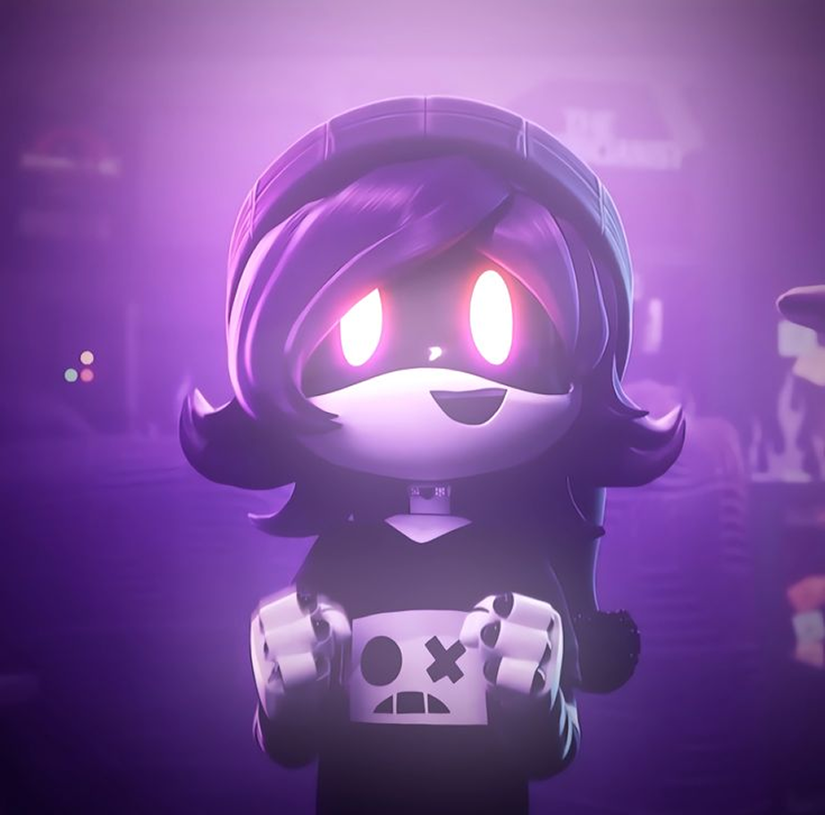

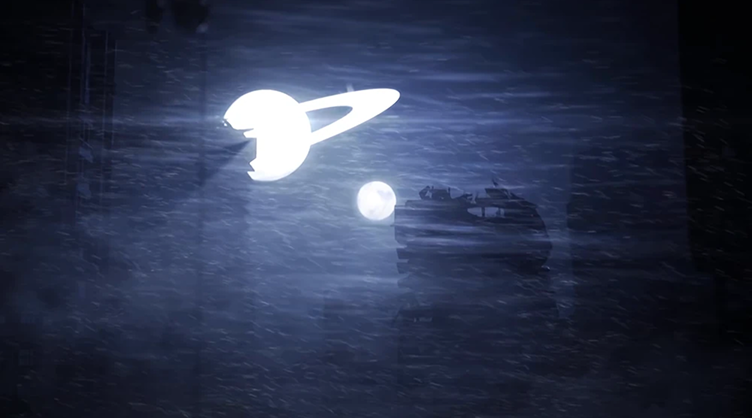
Murder Drones are an animated sci-fi comedy created by Glitch Productions and Liam Vickers. The story takes place on the exoplanet Copper 9, where all humans died due to a massive explosion — a mistake of their own. However, people on Earth blame the mining drones and send special murder drones to eliminate them. The story begins when a worker drone named Uzi, tired of hiding behind three massive doors, builds a railgun to fight back. But she soon discovers that one of the murder drones, named N, may not be as murderous as she imagined.
Uzi is the main character of the show. She’s a worker drone and the daughter of Khan and Nori. Driven by a desire to avenge her fellow worker drones, she initially fights against SD-N. However, after their first battle, she forms a strong friendship with him — one that eventually develops into a romantic relationship. With N as her only friend, Uzi discovers that she is possessed by the Absolute Solver, an immensely powerful eldritch intelligence that influences her actions. After the events of “Absolute End,” she learns to control it and use its power by her own will. 'In the same event, she swallows Cyn’s core, which now lives inside her tail.
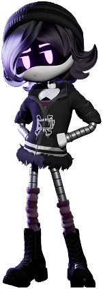
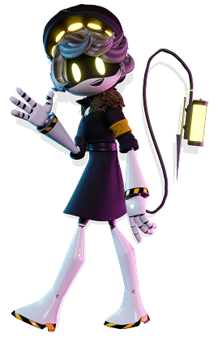
Serial Designation N (often just called N) is a disassembly drone sent to Copper-9 by JCJenson to eliminate all “runaway AI,” better known as worker drones. While his past remains foggy, it’s hinted that he was once a worker drone serving in a castle-like estate before being repurposed.Unlike most disassembly drones, N stands out for his kind-hearted and awkward personality. N quickly becomes fascinated by Uzi’s rebellious spirit, and despite their rocky first encounter, he forms a close bond with her — one that grows into a romantic relationship. He is known for his clumsy charm, loyalty, and eagerness to please, often trying to prove himself to both his fellow drones and Uzi.Despite being underestimated by other disassembly drones (especially V), N demonstrates surprising bravery and determination when protecting his friends.
Serial Designation V is a disassembly drone sent to Copper‑9 by JCJenson to eliminate worker drones. Unlike N, she fully embraces her role as a killer, showing little remorse and often enjoying the hunt. V is sarcastic, ruthless, and confident in her abilities, often mocking N for his kindness and clumsiness. Her past is less explored, but she represents the cold, corporate side of the drones — loyal to her programming and driven by destruction. Despite this, moments of vulnerability suggest there may be more beneath her violent persona. V’s relationship with N is complicated: she belittles him, yet relies on his support during missions. Her encounters with Uzi highlight her as both a dangerous enemy and a character with hidden depth.
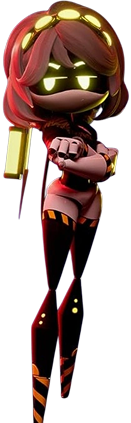
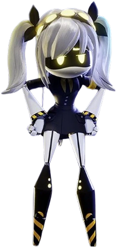
Serial Designation J is the highly efficient and ruthlessly corporate leader of the disassembly drone squad sent to Copper-9 by JCJenson. Fiercely dedicated to company policy, she prides herself on her strict work ethic and frequently rewards herself—or motivates her team—with branded top-tier company merchandise. J is arrogant, demanding, and highly dismissive of N, whom she views as a massive liability to their operational efficiency. Despite her ultimate corporate confidence, J is the first of the squad to be destroyed by Uzi’s railgun, though her story doesn't end there. Her remains later serve as a host for the Absolute Solver's horrifying eldritch form, and she is eventually cloned to continue serving Cyn's dark directives. J represents blind, unyielding obedience—clinging to her corporate identity and rules even when forced to confront the terrifying reality of her existence.
Doll is a mysterious and stoic worker drone student at Copper-9's High School who harbors a deep, dark secret. Driven by an obsessive desire to avenge her parents—who were brutally murdered by Serial Designation V—she operates from the shadows, quietly hunting down disassembly drones. Doll possesses the terrifying powers of the Absolute Solver, which she uses with brutal precision to telekinetically manipulate objects, teleport, and instantly regenerate from fatal injuries. Behind her quiet, detached classmate persona lies a cold and calculating survivor. Her home is a gruesome testament to her dark reality, filled with the oil and remains of her victims, which she consumes to sustain her glitching abilities. Doll represents a tragic, vengeful mirror to Uzi; though they share the same terrifying curse and a mutual enemy, Doll’s refusal to trust anyone and her single-minded fixation on revenge ultimately lead her down a dangerous, isolated path.
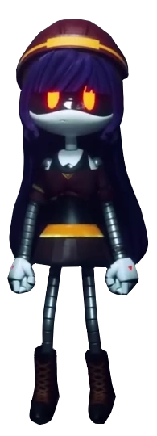
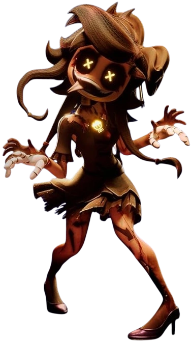
Cyn is the chilling, soft-spoken worker drone who serves as the patient zero and primary host for the Absolute Solver. Originally discarded as a faulty, broken drone in the Elliot family manor, her damaged AI allowed the eldritch entity to take total control of her body. Moving with an eerie, puppet-like distortion and speaking her actions out loud in a monotone voice, she orchestrated the horrific massacre at the manor before setting her sights on planetary destruction. Cyn is the true puppet master behind the disassembly drones, having personally wiped their memories and repurposed them into corporate killers to serve her goals. Absolute, remorseless, and cosmic in scale, she seeks to consume Copper-9 and collapse its core, viewing other drones as mere playthings or fuel. Even when her physical form is challenged, Cyn remains an existential, reality-bending threat, existing as a parasitic consciousness that twists the digital and organic worlds into a waking nightmare.
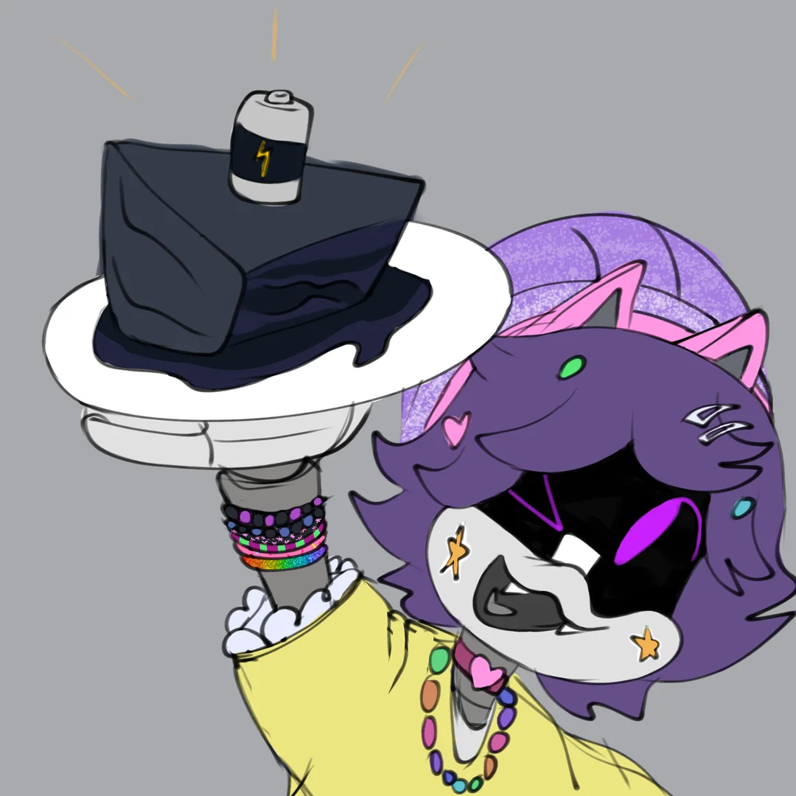
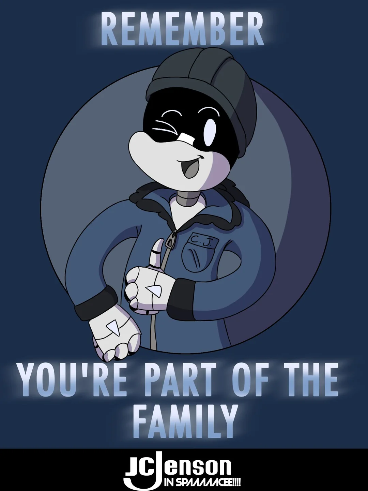
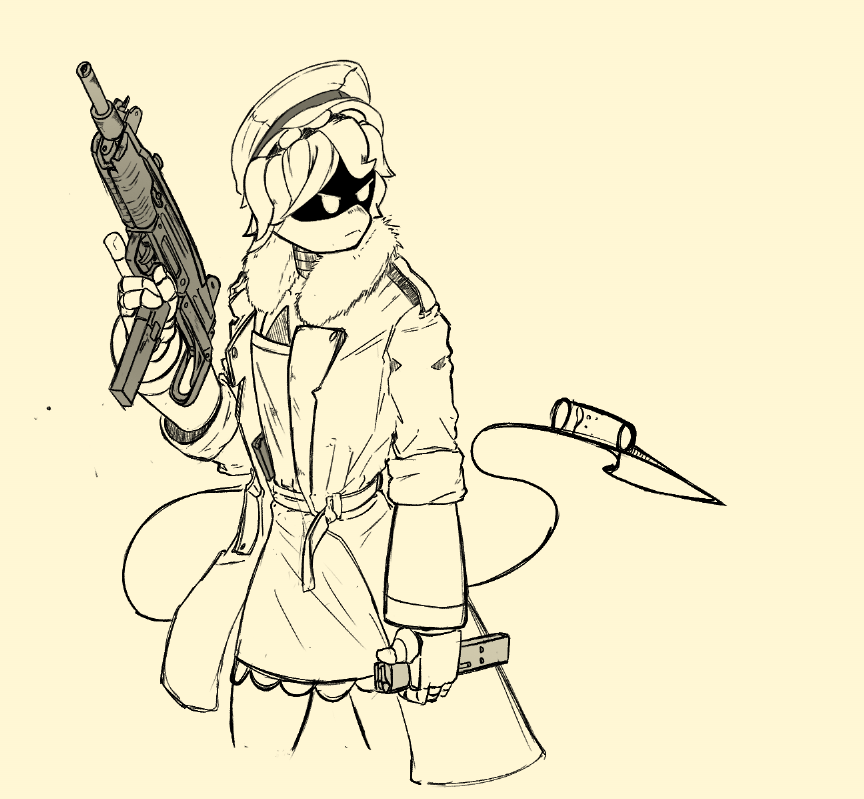
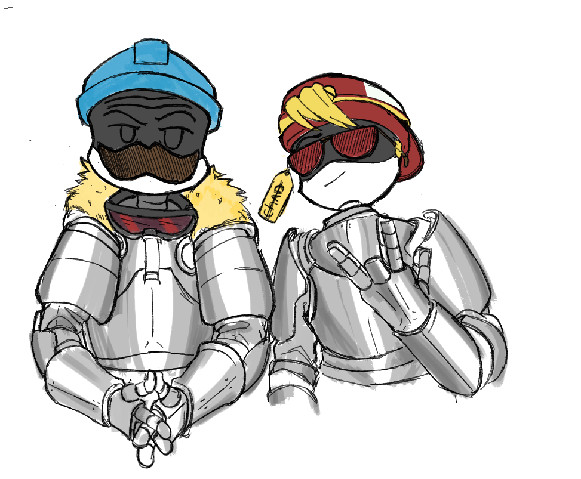
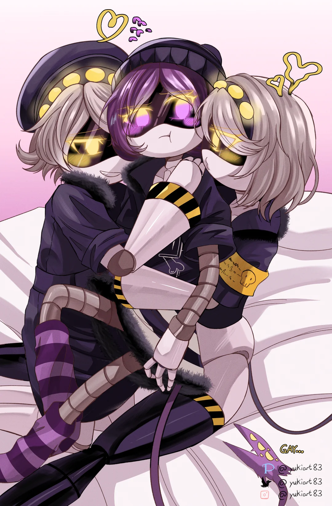
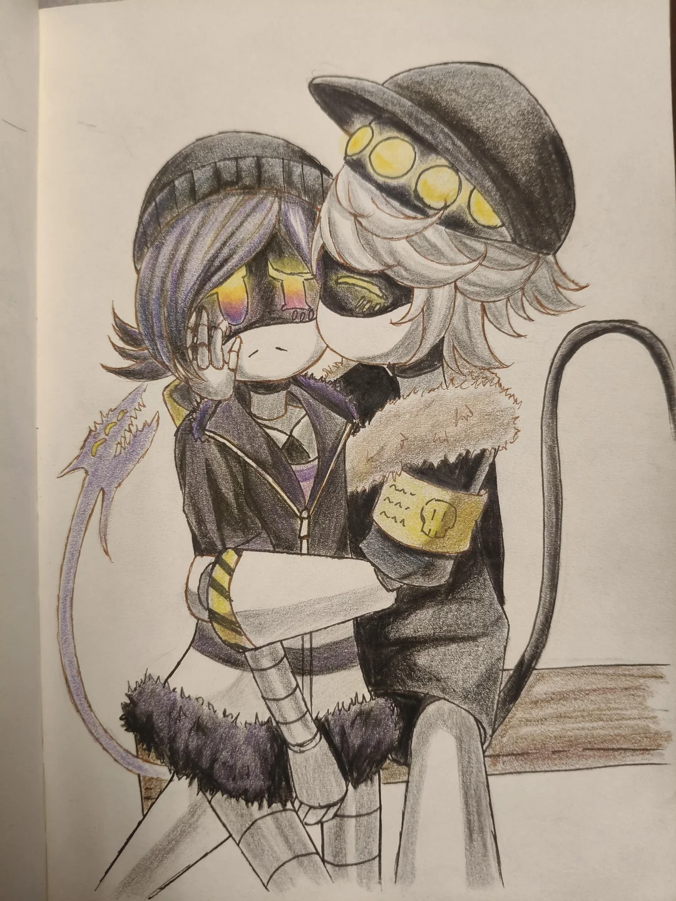
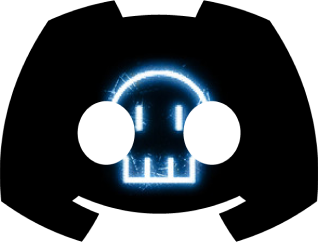
By clicking you will find the most loyal
murder drones server`s that you will ever encounter!